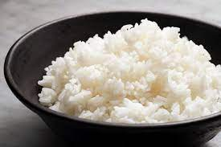

Braised pork rice, known as "Lu Rou Fan" in Chinese, is a well-loved traditional Taiwanese meal. It usually comprises succulent braised pork belly or ground pork served on a bed of steamed rice. The pork is simmered slowly in a blend of soy sauce, rice wine, garlic, and an array of spices, resulting in a tender and deeply flavorful dish.
1. The estimated cooking time is about 1 to 1.5 hours
2. 500g of pork plus 200g of rice can serve about four people
3. a big pot and a frying pan is required
| Pork Belly | Rice | Garlic | Sugar | Soy |
|---|---|---|---|---|
|
 | |
|
I like this website because it clearly introduces the steps. In addition to the regular way, the website you how to costumize by personal preferences.
redhousespiceI like this website because it gives additional information about the ingredient. This website explains the function of each ingredient and their substitutions.
cookinginchinglishI like this website because it provides appealing images. The image would increase readers' will to actually make it.
I really like this website because it teaches me a lot of web designing skills. If I don't know this website, this page might not exist.
youtubeI really like this website because it's full of resources. Moreover, the vedios here are more vivid and helpful than just looking at texts.
leetcodeI really like this website because this website makes me realize what programming can do. In addition to make beautiful web page like this, I found that programming can also solve difficult logical problems.